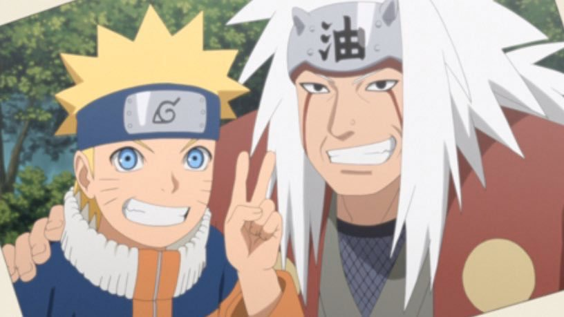

????? Senju
La Relève


Prologue : ?Un Héritier Caché
????? Senju est né dans des conditions mystérieuses, qui restent inconnues. Dès sa naissance, il a été éloigné du Pays du Feu, emporté loin de ses terres ancestrales. Il a grandi avec une nourrice, dans un environnement complètement différent de celui de son clan. Cette nourrice, qui avait une vision particulière de la vie, lui enseigna des leçons importantes. Elle disait souvent : "Dans tes gênes se trouvent les vestiges du passé, je ferai de toi cet arbre sur lequel s'appuiera notre futur." Ces mots guidaient ????? à travers un apprentissage difficile, mais essentiel. Quand ????? a eu dix ans, après avoir surmonté de nombreuses épreuves, son mentor décida de le ramener dans la terre de ses ancêtres, au Pays du Feu.


"L'art n'est pas beau par son apparence, le véritable art est beau de sens, ainsi reconnaît-on un artiste."
-????? Senju

De retour sur la terre des Senju, ????? découvrit le domaine de son clan pour la première fois. C’était un lieu rempli de forêts épaisses et d’une énergie ancienne. Tout semblait à la fois familier et étranger pour lui. Il se sentait comme un étranger, malgré son lien de sang avec ces terres. Les premiers jours furent difficiles. Les membres du clan regardaient ????? avec curiosité et méfiance. Personne ne comprenait pourquoi un enfant Senju avait été élevé loin des traditions. Mais ????? voulait prouver sa valeur, et il fit tout pour apprendre et comprendre l’histoire de son clan. Un ancien du clan lui enseigna les bases du chakra et l’histoire des Senju. C’était pour lui le début d’un long apprentissage, pour révéler son potentiel caché.

"Ce qu'on risque révèle ce qu'on vaut."
- ????? Senju


Avec le temps, ????? développa un talent naturel pour le ninjutsu. Malgré son jeune âge et son manque d’expérience, il montrait déjà des signes de grande aptitude. Son entraînement devint plus rigoureux et plus intense à mesure qu’il maîtrisait mieux son chakra, une compétence essentielle pour tout membre du clan Senju. Ses premiers essais étaient souvent difficiles et marqués par l’échec, mais il persévérait, déterminé à progresser.
Son mentor remarqua ces efforts et commença à croire que ????? pourrait bien incarner l’avenir du clan. Cependant, ????? ressentait une pression énorme. Il savait que le poids des attentes de son mentor et de tout le clan reposait sur ses épaules.
Un soir, après une journée d’entraînement particulièrement éprouvante, il se retrouva seul dans la forêt. Le regard perdu dans l’immensité du ciel, il se demanda si son destin était déjà tout tracé par les décisions de ses ancêtres, ou s’il pouvait façonner son propre chemin, selon ses rêves et ses ambitions.
À l’âge de dix ans, ????? fut enfin présenté à Konoha, le village créé par ses ancêtres. La grandeur du village, et la diversité des ninjas qu’il voyait pour la première fois, l’impressionnaient et le rendaient curieux.
Même s’il était émerveillé, il savait que son retour à Konoha signifiait le début d’une nouvelle épreuve. En tant que membre du clan Senju, il devait prouver qu’il était digne de cet héritage.
Son arrivée dans le village était un signal fort pour tous. Le sang Senju coulait encore, et ????? devait montrer qu’il était prêt à défendre le village et à suivre les traces de ses ancêtres, quoi qu’il arrive. Avec espoir et détermination, il regarda l’horizon, rêvant à un avenir qu’il construirait lui-même.
"La parole entraîne, l'exemple enseigne."
- ????? Senju
-"La Famille Senju"

Le clan Senju est un des deux clans majeurs qui ont fondé Konohagakure. Leur domaine est aussi un peu éloigné du palais du Maître Hokage, mais ils ont une place très importante dans l’histoire du village. Le clan Senju est connu pour sa force, sa capacité à se battre, et aussi pour ses valeurs de paix. Ces valeurs sont représentées par la Volonté du Feu, mise en avant par Hashirama Senju. Avant Hashirama, les Senju étaient une force incroyable sur les champs de bataille. Ils étaient célèbres pour savoir utiliser beaucoup de techniques ninja et pour être très forts. Ils étaient en rivalité avec les Uchiha, et leurs combats étaient très fréquents et terrifiants pour tous les autres ninjas. Les gens admirent beaucoup les Senju, qui sont vus comme les gardiens de la paix et de l’ordre dans Konohagakure. Si les Uchiha font parfois peur, les Senju sont souvent considérés comme un symbole de stabilité et de prospérité, même si leur puissance a pu inquiéter leurs ennemis.
"Mes gênes sont une malédiction, ceux qui tentera de prendre mes cellules seront maudits"
-????? Senju

Objectifs (Court terme) :
Au cours de sa vie de Ninja, ????? souhaite rendre fier sa famille en devenant un pilier de soutien pour Konoha. Pour cela, il souhaite intégrer l'académie des ninjas et devenir un sensei, partageant ses vastes connaissances et compétences avec la nouvelle génération. Il veille également sur les villageois les plus faibles dans leurs tâches quotidiennes, et participe activement à la reconstruction du village lors d'incidents. Il est extrêmement engagé avec la communauté. ????? veut aussi se faire de nouveaux amis en parlant à tout le monde, cherchant à tisser des liens et à élargir ses connaissances. Il souhaite ainsi montrer que les Senju sont des gens bien et normaux, dans l'optique de redorer l'image de son clan. Par la suite, il envisage de rejoindre le service de renseignement de Konoha, avec l'ambition de le diriger un jour, et de travailler en étroite collaboration avec les hauts-gradés du village pour protéger ses habitants de toute menace. En continuant de partager son savoir, et en travaillant en arrière-plan pour la sécurité de Konoha, il exprime son désir de défendre son village et de contribuer à sa prospérité, prêt à mettre sa vie en jeu.

Objectifs (Moyen terme) :
????? souhaite aussi protéger son maître Hokage, qui est le symbole de la prospérité du village de Konohagakure. C’est pour ça qu’il veut créer une garde rapprochée pour escorter l’Hokage pendant ses déplacements et devenir un de ses bras armés. Il veut aussi rejoindre le haut commandement de Konoha pour montrer que le clan Senju a maintenant des ninjas fidèles au village, avec des convictions fortes. Il veut améliorer l’image de son clan dans le village, en étant reconnu dans l’ombre pour ce qu’il a fait quand il était plus jeune. Il veut aussi créer un journal pour partager des informations au village, pour que personne ne rate rien, et pour encore plus faire aimer le clan Senju.
Objectif (long terme) :
????? veut explorer les archives du village, pour faire revenir d’anciennes traditions du clan Senju et restaurer son patrimoine culturel. Permettant d’effectuer d’anciens rituels et de réutiliser de vieilles techniques oubliées, ainsi que de reconstruire une bibliothèque Senju pour préserver cette mémoire historique. Cet objectif pourrait l’amener à parcourir le monde pour retrouver des parchemins et des artefacts qu’on pensait perdus pour toujours. Lui permettant d’en apprendre plus sur le passé de son clan, et de comprendre réellement comment les choses se sont passées. ????? aspire à devenir un maître du fuinjutsu pour protéger Konoha. Il voit dans cet art du sceau un moyen de renforcer les défenses du village en contrôlant le chakra des ennemis, et en posant des barrières de protection avancées. Son objectif va au-delà de la simple maîtrise personnelle, il souhaite transmettre ces connaissances et former une nouvelle génération de spécialistes en fuinjutsu, prenant des élèves sous son aile. ????? veut partager les subtilités du fuinjutsu en leur inculquant la rigueur et la précision nécessaires. Ces jeunes ninjas deviendront les gardiens de Konoha, équipés pour protéger le village avec des sceaux puissants.


» ??? «

» TAIJUTSU «
» Senju «
Sa nature de chakra n'a pas encore été déclanché.
Le Taijutsu (体術, signifiant littéralement : Techniques du corps) est l'une des trois branches de l'art du combat ninja avec le Ninjutsu et le Genjutsu. Assimilable aux arts martiaux réels, il comprend le combat à mains nues et le maniement des armes.
Les membres du clan Senju sont décrit par une seule et même caractéristique : Une force physique incroyable ainsi que une résistance plus haute.

» Taille:
????? fait 1m54
» Poids:
????? fait 50kg
» Corpulence:
????? possède une musculature standard
» Cheveux:
La couleur de cheveux de ????? est noir
» Caractères:
????? est une personne appréciant la vie globalement. Son but est de partager sa joie de vivre bien qu'il soit très méfiant des autres personnes. ????? n'a de confiance personne même ses proches.
Qualités ?????
- Joyeux
- Prêt à partager
- Enthousiaste
- Intelligent
- Fidèle
défauts ?????
- Condescendant
- Méfiant
- Anxieux